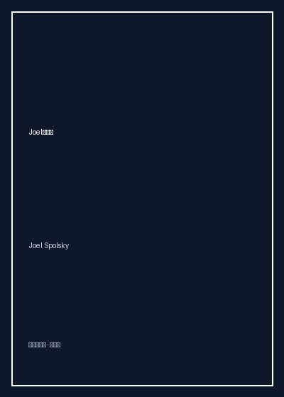

《Joel说软件》

总体观点
《Joel说软件》（Joel on Software）是全球程序员文化与技术管理思潮中流传最广、生命力最持久的经典随笔名篇。作者Joel Spolsky作为微软前Excel程序经理、Fog Creek软件创办人及Stack Overflow联合创始人，以其标志性的尖锐讽刺、深邃洞察与极具感染力的幽默笔法，对IT行业弥漫的形式主义官僚、拙劣的项目管理以及虚妄的软件工程乌托邦展开了无情扫射。
本书最著名的贡献之一是提出了衡量软件团队技术成熟度的黄金标尺——“乔尔测试（The Joel Test）十二条法则”（是否使用版本控制？能否一键构建？是否做每日构建？是否修复缺陷后再写新功能？是否为开发者提供安静环境？）。Joel反复证明，优秀的软件开发绝非流水线劳工的机械敲砖，而是一项由极少数拥有非凡心智与品味的创造者驱动的高度复杂智力工程。
书中深入探讨了软件设计的直觉法则、软件公司的商业竞争护城河（商品化你的互补品）、技术债与重写陷阱（切勿轻易推倒重写），以及如何招聘“聪明且能成事（Smart and Gets Things Done）”的顶尖工程师。阮一峰流畅传神的译笔更赋予了该书极强的文学魅力，使其成为每一位从业者照见职场现实与职业尊严的案头明镜。
核心观点
-
1. 重写是软件公司可能犯下的最致命单一错误
认为现有老旧代码混乱肮脏并试图推倒重写，是程序员最危险的傲慢。老代码中的怪异补丁是数年间无数边缘Bug与生产事故换来的真实智慧，重写意味着全盘归零。
网景公司（Netscape）决定推倒重写浏览器内核长达数年，在此期间微软IE凭借微小迭代彻底占领了全部浏览器市场份额，导致网景走向不可逆的溃败。 -
2. 乔尔测试：衡量软件团队是否处于及格线的十二道照妖镜
优秀的团队不需要繁文缛节的ISO流程，只需十二条极其质朴的工程常识：版本控制、一键发布、安静独立办公室、持续测试与严禁带病向前冲刺。
一个连一键构建脚本都没有、必须依靠工程师手动在各自电脑上拷贝拼凑编译包的团队，其研发效率与可靠性必然随着团队规模扩张而呈断崖式下跌。 -
3. 招聘黄金法则：永远只寻找聪明且能成事的人
技术面试的核心不是考核具体API库的记忆背诵，而是考察求职者两项核心素质：一是脑力是否聪慧敏捷，二是在面临复杂困境时是否有强烈的把事情闭环交付的执行力。
面试中让候选人现场手写一段并不复杂的字符串倒序或指针链表操作，观察其在面对自己思维盲区时能否坦率沟通、抽丝剥茧地调试，远比背诵框架配置有效得多。 -
4. 商业护城河秘辛：主动将你的互补产品商品化以扩大市场
高科技商业世界的残酷竞争法则在于：一家公司的利润往往取决于其互补品的价格。竭力促进自己互补品（如开源操作系统之于服务器硬件）的廉价与通用，能最大化自身垄断收益。
IBM之所以大力出资支持开源的Linux系统发展，根本原因在于廉价免费的操作系统将极大地促进IBM高利润企业级服务器和IT咨询服务的采购需求。 -
5. 界面设计的本质哲学：程序应当顺从用户的心理模型
UI设计之所以失败，根源在于软件工程师把机器内部的实现逻辑直接粗暴地暴露在了界面上，强迫非专业用户按照计算机的底层架构去思考。
当用户在文本编辑器中输入文字时，他们心中默认“输入了就存在”，而传统的弹出框“是否保存更改”就是技术实现对人类直觉认知模型的无理冒犯。
全书结构
-
第一辑：选择软件管理的艺术与乔尔测试
阐明优秀软件团队的构建准则，系统拆解乔尔测试十二条原则，剖析为何官僚考核与过度度量指标会毁掉工程师创造力。
分析按照代码行数或修复Bug数量发放奖金的荒诞机制，如何诱导程序员主动制造大量低级Bug来刷KPI。 -
第二辑：软件设计的直觉法则与人机交互
从人类心理学角度批判糟糕的软件UI，探讨为什么选择过多会让用户瘫痪，以及如何打造让门外汉不假思索即可上手的界面。
拿早期手持设备上的多层级级联菜单做对比，演示如何通过减少层级与提供合理的默认值彻底拯救用户体验。 -
第三辑：开发者的生活环境与高效招聘
深入探讨程序员心流（Flow State）的脆弱性，论证独立安静办公室与顶级双显示器对生产力的决定性影响，并传授极客面试法。
计算开放式大开间办公区中一次偶然的打扰如何导致程序员需要漫长的十五分钟才能重新找回高难度算法的代码心流。 -
第四辑：科技商业博弈与免费软件的逻辑
透析微软、苹果与开源运动之间的商业攻防战，阐述“商品化互补品”战略与摩尔定律对软件商业模式的深远重构。
解释微软为何在早期极其宽容个人盗版Windows，因为先占领开发生态与用户习惯是日后从企业端变现的核心护城河。